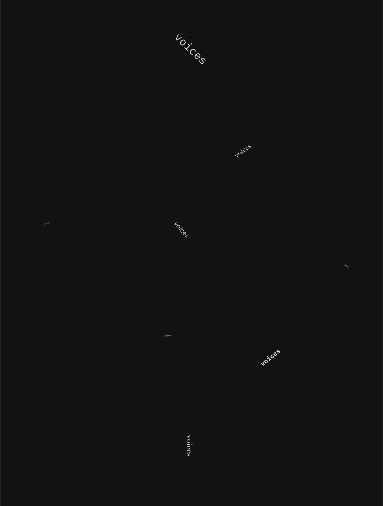
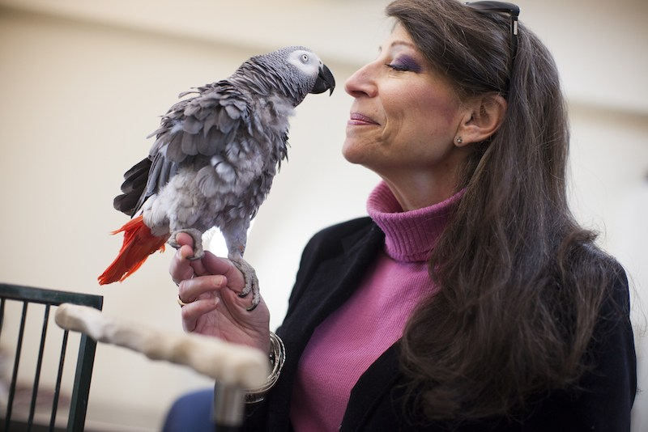

The Fermi paradox is sometimes known as the Great Silence. The universe ought to be a cacophony of...

but instead it’s disconcertingly quiet
Some humans theorize that intelligent species go extinct before they can expand into outer space.
If they’re correct, then the hush of the night sky is the silence of a graveyard.
If they’re correct, then the hush of the night sky is the silence of a graveyard.

Hundreds of years ago, my kind was so
plentiful that the Río Abajo Forest
resounded with our voices. Now we’re
almost gone. Soon this rainforest may be
as silent as the rest of the universe.
plentiful that the Río Abajo Forest
resounded with our voices. Now we’re
almost gone. Soon this rainforest may be
as silent as the rest of the universe.
There was an African grey parrot named Alex.
He was famous for his cognitive abilities.
Famous among humans, that is.
A human researcher named Irene Pepperberg
spent thirty years studying Alex. She found that
not only did Alex know the words for shapes
and colors, he actually understood the concepts of shape and color.
He was famous for his cognitive abilities.
Famous among humans, that is.
A human researcher named Irene Pepperberg
spent thirty years studying Alex. She found that
not only did Alex know the words for shapes
and colors, he actually understood the concepts of shape and color.

Mitchell, Stephanie. Dr. Irene Pepperberg and Griffin. Digital image. When We Talk About Animals. Yale University, 10 Dec. 2018. Web. 07 Mar. 2021.
Many scientists were skeptical that a bird
could grasp abstract concepts. Humans like
to think they’re unique. But eventually Pepperberg convinced them that Alex wasn’t
just repeating words, that he understood
what he was saying.
Out of all my cousins, Alex was the one
who came closest to being taken seriously
as a communication partner by humans.
Alex died suddenly, when he was still
relatively young. The evening before he
died, Alex said to Pepperberg,...
could grasp abstract concepts. Humans like
to think they’re unique. But eventually Pepperberg convinced them that Alex wasn’t
just repeating words, that he understood
what he was saying.
Out of all my cousins, Alex was the one
who came closest to being taken seriously
as a communication partner by humans.
Alex died suddenly, when he was still
relatively young. The evening before he
died, Alex said to Pepperberg,...
“You be good. I love you.”
If humans are looking for a connection with a nonhuman intelligence, what more can they ask for than that?
Every parrot has a unique call
that it uses to identify itself; biologists refer to this as the parrot’s “contact call.”
that it uses to identify itself; biologists refer to this as the parrot’s “contact call.”
In 1974, astronomers used Arecibo
to broadcast a message into outer space intended to demonstrate human intelligence. That was humanity’s contact call.
to broadcast a message into outer space intended to demonstrate human intelligence. That was humanity’s contact call.
In the wild, parrots address each other by name. One bird imitates another’s contact call to get the other bird’s attention.
If humans ever detect the Arecibo message being sent back to Earth, they will know someone is trying to get their attention.
Parrots are vocal learners: we can learn to
make new sounds after we’ve heard them. It’s an
ability that few animals possess. A dog may
understand dozens of commands, but it will never do anything but bark.
Humans are vocal learners, too. We have that
in common. So humans and parrots share a special relationship with sound. We don’t simply cry out. We pronounce. We enunciate.
make new sounds after we’ve heard them. It’s an
ability that few animals possess. A dog may
understand dozens of commands, but it will never do anything but bark.
Humans are vocal learners, too. We have that
in common. So humans and parrots share a special relationship with sound. We don’t simply cry out. We pronounce. We enunciate.
Perhaps that’s why humans built Arecibo the way they did.
A receiver doesn’t have to be a transmitter, but Arecibo is both. It’s an ear for listening, and a mouth for speaking.
A receiver doesn’t have to be a transmitter, but Arecibo is both. It’s an ear for listening, and a mouth for speaking.
Humans have lived alongside parrots for
thousands of years, and only recently
have they considered the possibility that
we might be intelligent.
I suppose I can’t blame them. We parrots
used to think humans weren’t very bright.
It’s hard to make sense of behavior that’s
so different from your own.
thousands of years, and only recently
have they considered the possibility that
we might be intelligent.
I suppose I can’t blame them. We parrots
used to think humans weren’t very bright.
It’s hard to make sense of behavior that’s
so different from your own.
But parrots are more similar to humans than any extraterrestrial species will be, and humans can
observe us up close; they can look us in the eye.
observe us up close; they can look us in the eye.
How do they expect to recognize an alien intelligence if all they can do is eavesdrop from a hundred light-years away?
It’s no coincidence that “aspiration” means
both hope and the act of breathing.
When we speak, we use the breath in our
lungs to give our thoughts a physical form.
The sounds we make are simultaneously our intentions and our life force.
both hope and the act of breathing.
When we speak, we use the breath in our
lungs to give our thoughts a physical form.
The sounds we make are simultaneously our intentions and our life force.
I speak, therefore I am. Vocal learners, like
parrots and humans, are perhaps the only
ones who fully comprehend the truth of this.
parrots and humans, are perhaps the only
ones who fully comprehend the truth of this.
There’s a pleasure that comes with shaping sounds
with your mouth. It’s so primal and visceral that,
throughout their history, humans have considered
the activity a pathway to the divine.
with your mouth. It’s so primal and visceral that,
throughout their history, humans have considered
the activity a pathway to the divine.
Pythagorean mystics believed that vowels represented the music of the spheres, and
chanted to draw power from them.
Pentecostal Christians believe that when
they speak in tongues, they’re speaking the language used by angels in heaven.
Brahman Hindus believe that by reciting
mantras, they are strengthening the building blocks of reality.
chanted to draw power from them.
Pentecostal Christians believe that when
they speak in tongues, they’re speaking the language used by angels in heaven.
Brahman Hindus believe that by reciting
mantras, they are strengthening the building blocks of reality.
Only a species of vocal learners would ascribe
such importance to sound in their mythologies.
We parrots can appreciate that.
such importance to sound in their mythologies.
We parrots can appreciate that.
According to Hindu mythology, the universe
was created with a sound:
was created with a sound:
“om.”
It is a syllable that contains within it everything
that ever was and everything that will be.
that ever was and everything that will be.
When the Arecibo telescope is pointed at the space between stars, it hears a faint hum.
Astronomers call that the cosmic microwave background. It’s the residual radiation
of the Big Bang, the explosion that created
the universe fourteen billion years ago.
But you can also think of it as a barely
audible reverberation of that original “om.”
That syllable was so resonant that the
night sky will keep vibrating for as long
as the universe exists.
Astronomers call that the cosmic microwave background. It’s the residual radiation
of the Big Bang, the explosion that created
the universe fourteen billion years ago.
But you can also think of it as a barely
audible reverberation of that original “om.”
That syllable was so resonant that the
night sky will keep vibrating for as long
as the universe exists.
When Arecibo is not listening to anything else,
it hears the voice of creation.
it hears the voice of creation.
We Puerto Rican parrots have our own myths. They’re simpler than human mythology, but I think humans would take pleasure from them.
Alas, our myths are being lost as my species dies out. I doubt the humans will have deciphered our language before we’re gone.
Alas, our myths are being lost as my species dies out. I doubt the humans will have deciphered our language before we’re gone.
So the extinction of my species doesn’t just mean the loss of a group of birds. It’s also the disappearance of
our language,
our rituals,
our traditions.
It’s the silencing of our voice.
Human activity has brought my kind to the brink of extinction, but I don’t blame them for it. They didn’t do it maliciously. They just weren’t paying attention.
And humans create such beautiful myths; what imaginations they have. Perhaps that’s why their aspirations are so immense. Look at Arecibo.
Any species who can build such a thing must have greatness within them.
And humans create such beautiful myths; what imaginations they have. Perhaps that’s why their aspirations are so immense. Look at Arecibo.
Any species who can build such a thing must have greatness within them.
My species probably won’t be here for much longer;
it’s likely that we’ll die before our time and join
the Great Silence. But before we go, we are sending a message to humanity. We just hope the telescope
at Arecibo will enable them to hear it.
The message is this:
it’s likely that we’ll die before our time and join
the Great Silence. But before we go, we are sending a message to humanity. We just hope the telescope
at Arecibo will enable them to hear it.
The message is this:
You be good. I love you.

Drake, Frank. Arecibo Message. Digital image. The Arecibo Message. NAIC - Arecibo Observatory. Web. 07 Mar. 2021.
Story by Ted Chiang
Chiang, Ted. "The Great Silence - Issue 75: Story."
The Great Silence. Nautilus, 15 Aug. 2019. Web. 07 Mar. 2021.
Chiang, Ted. "The Great Silence - Issue 75: Story."
The Great Silence. Nautilus, 15 Aug. 2019. Web. 07 Mar. 2021.